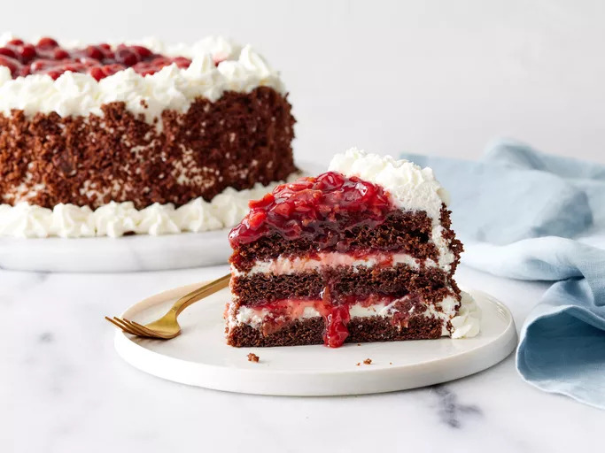

Home
Black Forest Cake

Description
This stunning black forest cake has 3 layers of moist chocolate cake with
sour cherry filling and sweet whipped cream frosting in each layer and on
top. The sides of the cake are decorated with cake crumbles for a gorgeous
gateau fit for any special occasion!
Ingredients
Black Forest Cake:
- 2 ⅛ cups all-purpose flour
- 2 cups white sugar
- ¾ cup unsweetened cocoa powder
- 1 ½ teaspoons baking powder
- ¾ teaspoon baking soda
- ¾ teaspoon salt
- 3 large eggs
- 1 cup milk
- ½ cup vegetable oil
- 1 tablespoon vanilla extract
Topping:
- 2 (20 ounce) cans pitted sour cherries
- 1 cup white sugar
- ¼ cup cornstarch
- 1 teaspoon vanilla extract
Whipped Cream Frosting:
- 3 cups heavy whipping cream
- ⅓ cup confectioners' sugar
Steps
- Gather all ingredients.
-
Preheat the oven to 350 degrees F (175 degrees C). Grease and flour two
9-inch round cake pans; line bottoms with parchment paper. Place a
medium bowl in the refrigerator to chill before using it to whip the
cream.
-
Whisk flour, sugar, cocoa, baking powder, baking soda, and salt together
in a large bowl.
- Add eggs, milk, oil, and vanilla; beat until combined.
- Pour cake batter into the prepared pans.
-
Bake in the preheated oven until a toothpick inserted in the centers
comes out clean, about 35 minutes. Cool layers in pans on wire racks for
10 minutes. Run a paring knife around edges to loosen and invert
carefully onto racks to cool completely, 1 to 2 hours.
-
While cake layers bake, drain cherries for topping, reserving 1/2 cup
juice. Combine reserved juice, cherries, sugar, and cornstarch in a
2-quart saucepan.
-
Cook, stirring constantly, over low heat until thickened. Stir in
vanilla. Let cool at room temperature for 30 minutes. Transfer to the
refrigerator to cool completely before assembling cake.
-
To make the frosting: Combine whipping cream and confectioners' sugar in
the chilled medium bowl. Beat with an electric mixer at high speed until
stiff peaks form.
-
Split each cake layer in half horizontally using a long serrated knife.
- Tear one layer into crumbs; set aside.
-
Gently brush loose crumbs off top and sides of remaining layers using a
pastry brush or your hands. Reserve 1 ½ cups of frosting for piping
decorations on cake; set aside.
-
To assemble, place one cake layer on a cake plate. Spread with 1 cup
frosting; top with 3/4 cup cherry topping.
-
Top with second cake layer; repeat layers of frosting and cherry
topping.
- Top with third cake layer and frost sides of cake.
- Pat reserved cake crumbs onto sides of cake.
-
Spoon reserved 1 ½ cups frosting into a pastry bag fitted with a star
decorator tip. Pipe around top and bottom edges of cake.
- Spoon remaining cherry topping on top of cake.
- Store covered in the refrigerator until ready to serve. Enjoy!